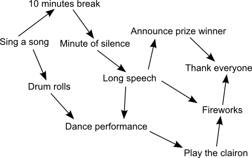

The Beaver community has a very strict protocol for organizing ceremonies. In the illustration below, each text represents a possible step of a ceremony. An arrow means that the step at the start of the arrow has to be performed at some point before the step at the end of the arrow.
|  |
Drag the steps on the right to get an order that corresponds to a ceremony allowed by these rules.
Here is one possible order:
|
Sing a song
Drum rolls
10 minutes break
Minute of silence
Long speech
Dance performance
Announce prize winner
Play the clairon
Fireworks
Thank everyone
|
|
One way to obtain such an order is to follow the following algorithm:
while some steps have not yet been performed
find and perform one such that every step pointing at it has already been performed
For example, at the beginning, "Sing a song" is the only step that has no other step pointing at it, so we can perform it.
Then, since both steps "10 minutes break" and "Drum rolls" only had "Sing a song" pointing at them, and since "Sing a song" has been performed, both can now be performed. We can start with "Drum rolls", for example.
Now we still have "10 minutes break" available. On the other hand, "Dance performance" that "Drum rolls" was pointing to, still has "Long speech" pointing at it, which has not been performed. So we have only one choice and perform "10 minutes break".
We can now perform "Minute of silence", then "Long speech", and now, "Dance performance" can be performed, as can "Announce prize winner". We can perform the in this order, for example.
We then have no choice for the last 3 steps, and have to perform "Play the clairon", then "Fireworks" and finally, "Thank everyone".
There are several other valid answers, depending on which step you perform when several are available in the algorithm described above.
Solving this tasks means performing a topological sort of the graph. This implies understanding the graph representation, as well as the precedence relationships expressed by the edges of the graph.